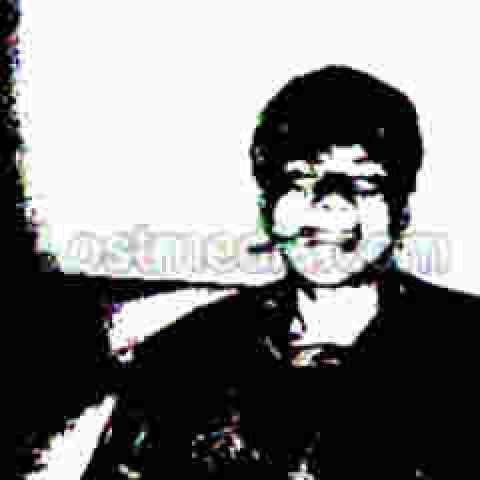

KIDDWERO
De LostWiki, la enciclopedia perdida.
Este artículo trata sobre el artista de Monterrey. No confundir con KIDD WERO, un proyecto homónimo distinto, con canciones como «DUELES TANTO» o «PASE DE BATALLA».
Este artículo no cita fuentes suficientes. Puedes ayudar a LostWiki ampliándolo.
| KIDDWERO | |
|---|---|
 KIDDWERO en una fotografía sin fecha. | |
| Información personal | |
| Nombre real | Martín Abdiel Oropeza Salazar[1] |
| Origen | Monterrey, Nuevo León |
| Información artística | |
| Géneros | Urbano experimental, gro0 |
| Sello | Draikotune Music (independiente) |
| Artistas relacionados | Bruno4vr, Cod3x, Trash |
KIDDWERO es un proyecto musical independiente de la escena urbana y electrónica emergente, con vínculos con la escena musical de Monterrey, Nuevo León. Su propuesta se mueve dentro del urbano experimental y el gro0.[2]
Sus lanzamientos se distribuyen bajo el sello independiente Draikotune Music. Su información biográfica y discográfica se encuentra dispersa en redes sociales y plataformas de streaming.
Contenido [ocultar]
Biografía
En los créditos de composición de sus temas figura el nombre de Martín Abdiel Oropeza Salazar.[1] Sus publicaciones en redes muestran vínculos con la escena musical de Monterrey.[cita requerida]
Discografía
| Año | Título | Tipo |
|---|---|---|
| 2026 | Werologia | EP |
| — | «nAkOyMakUarRo» | Sencillo |
| — | «LaNEtAdElPlaneTa» | Sencillo |
| — | «KeTeAzoTeE» | Sencillo |
| — | «JeKeEe» | Sencillo |
| — | «BAnDi» | Sencillo |
| próx. | LOSTMEDIA | EP |
LOSTMEDIA
LOSTMEDIA es el próximo EP de KIDDWERO. Su primer sencillo, «GRo0», fue producido por Bruno4vr.[cita requerida]
Antes de su anuncio circuló una cinta VHS sin etiqueta con un supuesto videojuego relacionado con el EP. Su existencia nunca fue confirmada.[cita requerida]
Colaboradores
Suele trabajar de manera recurrente con productores y artistas como Bruno4vr (también escrito Brun$4vr<3), Cod3x y Trash (prodtrash07).

KIDDWERO Bruno4vr
Bruno4vr
TrashCuriosidades
- Los títulos de sus canciones suelen alternar mayúsculas y minúsculas, como «nAkOyMakUarRo» o «LaNEtAdElPlaneTa».
- En plataformas digitales existe un proyecto homónimo, escrito por separado como KIDD WERO, que corresponde a un artista distinto.
Véase también
Referencias
- ↑ Créditos de composición en plataformas de streaming.
- ↑ Perfil oficial de KIDDWERO en Instagram.